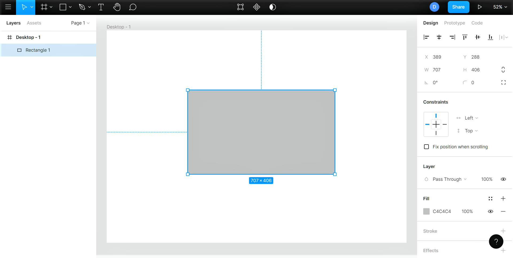

Основи Figma
Figma — це інноваційний інструмент для дизайну інтерфейсів, який широко використовується професіоналами
у галузі UI/UX дизайну. Ця веб-платформа дозволяє дизайнерам створювати високоякісні інтерфейси, працювати
над спільними проектами в реальному часі та проводити тестування дизайну. Я пропоную розглянути
ключові інструменти Figma та їх можливості для професіоналів у сфері дизайну.
Знайомство з інтерфейсом Figma

Інтерфейс Figma
Зовнішній вигляд інтерфейсу Figma досить мінімалістичний, але надає набір
потужних інструментів. Ось пояснення основних областей інтерфейсу, які позначено вище:
Tools (Інструменти)
Тут ви можете швидко отримати доступ до інструментів, які використовуються найчастіше: переміщення, рамка,
фігури, перо, текст тощо.
Actions (Дії)
Ця область показує додаткові параметри для будь-якого об’єкта, який ви вибрали на своєму полотні.
Якщо жоден об’єкт не вибрано (як показано вище), Figma відображає назву файлу.
Colaboration (Параметри співпраці та перегляду)
У правій частині панелі інструментів можна знайти функції обміну файлами та побачити, хто ще переглядає ваш файл
у режимі реального часу. Ви також знайдете параметри перегляду та масштабування.
Layers (Шари)
Також відома просто як "ліва бічна панель", тут перераховано кожен елемент у файлі та організовано у сторінки, фрейми та групи.
Canvas (Полотно)
Саме тут ви створите всі свої проекти!
Properties (Властивості)
Панель властивостей пропонує контекстну інформацію та налаштування для будь-якого вибраного об’єкта.
На зображенні вище можна побачити варіанти самого Canvas. За замовчуванням ви переглядаєте вкладку "Design",
але також є окрема вкладка для налаштування прототипу — ми розглянемо це пізніше цього тижня.
Створення нового проекту
Тепер, коли ви зорієнтувалися, давайте перейдемо до більш цікавих речей!
Давайте почнемо новий проект, натиснувши кнопку "Menu" (логотип Figma) у верхньому лівому куті, а потім вибравши "File" і "New design file". Це має автоматично створити новий файл із порожнім полотном у новій вкладці вашого браузеру.
Створення нового дизайн-файлу
Дослідження інструментів
Інтерфейс Figma інтуїтивно зрозумілий, що робить його легким для новачків, а також ефективним для досвідчених дизайнерів.
Він дозволяє користувачам легко перемикатися між дизайном, прототипуванням та передачею, не виходячи з одного додатку.
Figma надає низку інструментів, які роблять його таким особливим. Нижче наведено огляд цих інструментів та функціональних можливостей Figma.
Frame (Рамка)
Інструмент Frame дозволяє створювати робочу поверхню на полотні. Ви також можете вкладати кадри один в одного. Але варто почати з додавання рамки.
Щоб створити рамку, оберіть інструмент "Frame" на панелі інструментів або натисніть одну з наступних клавіш - F або A
Натиснувши на інструмент рамки, ви можете вибрати один із шаблонів на панелі властивостей або намалювати власну робочу поверхню на полотні

Grid (Сітка)
Сітки є важливими для розуміння негативного інтервалу, коли ви проектуєте для iOS, Android і Web.
Shape Tools (Форми)
Ви можете отримати доступ до всіх основних інструментів для створення простих геометричних фігур за допомогою інструментів
"Shape" на панелі інструментів. Доступні форми включають прямокутник, лінію, стрілку, еліпс, багатокутник і зірку.
Щоб вставити фігуру оберіть опцію "Shape tools" і виберіть потрібну форму.
Тут я додаю прямокутник, але ви можете додати будь-яку форму, яку хочете

Alignment (Вирівнювання)
Верхня частина панелі властивостей містить різні параметри вирівнювання.
Нижче наведено список усіх параметрів, а також їхні комбінації клавіш:
- Вирівняти за лівим краєм (Alt + A)
- Вирівнювання по центру по горизонталі (Alt + H)
- Вирівняти праворуч (Alt + D)
- Вирівняти зверху (Alt + W)
- Вирівняти по центру по вертикалі (Alt + V)
- Вирівняти по низу (Alt + S)
Image (Обробка зображень)
У Figma зображення можна редагувати на льоту після імпорту.
Ви можете керувати такими параметрами, як експозиція, контраст, насиченість і багато іншого, не виходячи з інструменту дизайну.
Color Picker (Палітра кольорів)
Оберіть в меню властивостей пункт "Fill", щоб почати налаштування фону.
Як і в більшості інструментів дизайну, ви можете змінити колір, клацнувши колір на колесі або за допомогою піпетки.
Крім того, ви можете ввести шістнадцятковий код або вибрати один із попередньо встановлених кольорів.
Тут також можна змінити значення непрозорості.

Figma також надає вам можливість замінити суцільні кольори градієнтами. Є кілька варіантів градієнта.
Ви можете знайти параметри градієнта в палітрі кольорів.
Спробуйте погратися з різними комбінаціями кольорів, непрозорістю, а також напрямком градієнта.
Resize (Змінити розмір)
Ви можете змінити розмір будь-якого шару, виділивши його, а потім перетягнувши кути.
Утримуйте Shift, щоб зберегти те саме співвідношення сторін. Крім того, ви можете змінити значення «W» (ширина) і «H» (висота) на панелі властивостей.
Обов’язково оберіть опцію Constraint Proportions, щоб елементи пропорційно масштабувалася.

Останнє, що буде розглянуть в цій статті - це збереження проектів.
Перш за все необхідно дати нашому файлу назву — для цього просто натисніть у верхній частині вікна там, де написано «Untitled» у верхній частині вікна.
Файли у Figma зберігаються в хмарному сховищі, що дозволяє користувачам отримувати до них доступ з будь-якого пристрою з підключенням до Інтернету.
Кожна зміна в файлі автоматично зберігається, що дозволяє уникнути втрати даних і забезпечує можливість повернутися до попередніх версій документа.